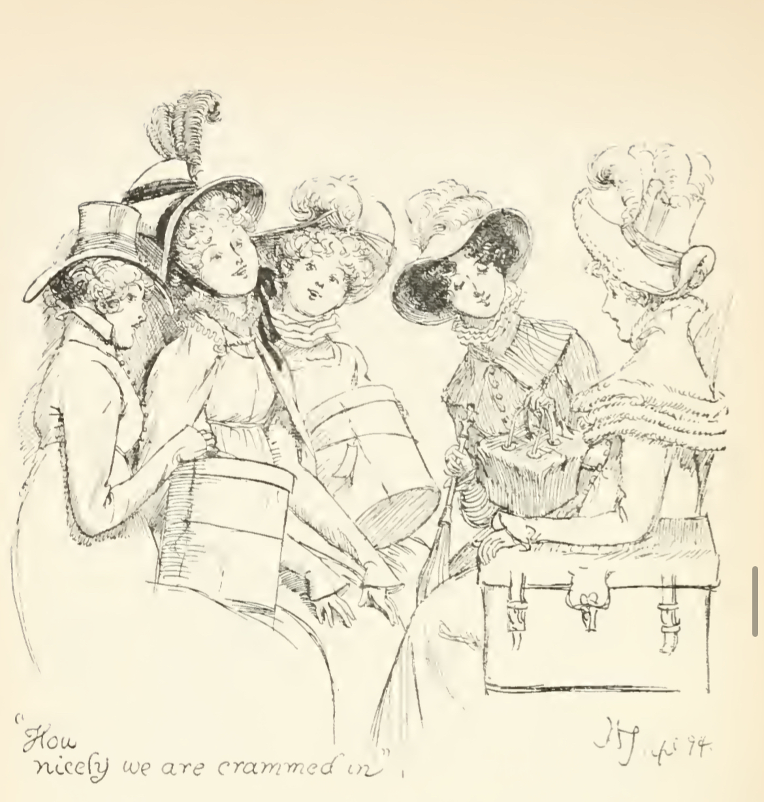
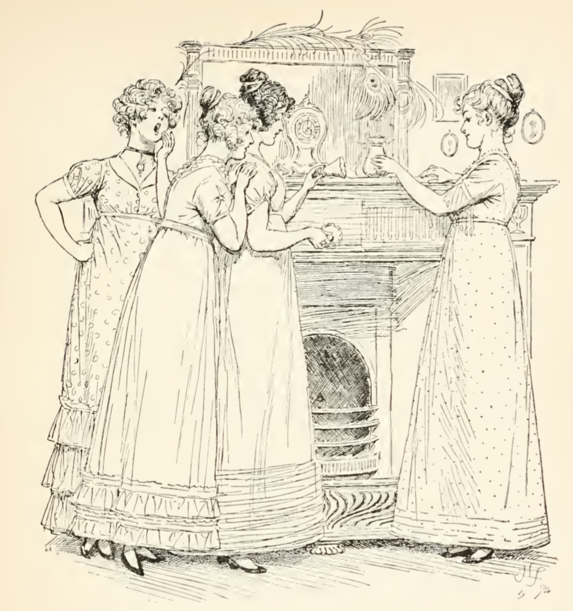

Мэри Беннет – третья и средняя дочь Мистера и Миссис Беннет. Остин не указывает ее точный возраст, однако можно предположить, что героине восемнадцать или девятнадцать лет: известно, что она младше двадцатилетней Элизабет и старше семнадцатилетней Китти.

Во второй главе Мэри впервые появляется в действии романа: Мистер Беннет, обращаясь к ней, делает акцент на ее интеллектуальном развитии и любви к чтению: “А ты, Мэри, что думаешь по этому поводу? Ведь ты у нас такая рассудительная девица, читаешь ученые книги и даже делаешь из них выписки”.[1, с. 11] Здесь же и нарраторка подчеркивает образованность героини, отмечая, что в ответ на вопрос отца Мэри хотела ответить “что-нибудь очень глубокомысленное”[1, с. 11]. Подобная оценка героини пронизывает весь роман: нарраторка, говоря о Мэри, постоянно упоминает любовь средней Беннет к чтению и к занятиям самообразованием и музыкой. Практически в каждом эпизоде, в котором Мэри фигурирует, она изображается погруженной в учебу. Тем не менее, несмотря на начитанность героини и ее стремление к получению новых знаний, ее высказывания нельзя назвать остроумными и уместными. Реплики средней Беннет клишированные: она не анализирует прочитанное, а только заучивает его, выдавая готовые фразы в диалогах с окружающими ее людьми. Ее суждения всегда основаны на прочитанном и никогда – на ее личных рассуждениях, что подтверждают слова нарраторки об “основательности суждений”[1, с. 28] Мэри. Эта неспособность Мэри анализировать прочитанное и рассуждать самостоятельно объясняет, например, почему она не смогла ответить на упомянутый выше вопрос отца: героиня не имеет в своем запасе заученных цитат, подходящих для ситуации, и поэтому не может придумать достойный, по ее мнению, ответ. Однако наиболее показательным здесь можно считать эпизод диалога сестер после побега Лидии. Мэри говорит Элизабет, что из ситуации, произошедшей с сестрой, можно “извлечь полезные уроки”[1, с. 392], а затем предается нравоучительным рассуждениям о женской репутации. Здесь нарраторка прямо указывает на то, что высказывания средней Беннет основаны на “прописных истинах”[1, с. 392]. Мэри цитирует то, что прочитала, не осознавая резкости своих слов[3] и не соотнося критически прочитанное с действительностью. Получается, что стремясь показать окружающим свое интеллектуальное превосходство, героиня демонстрирует интеллектуальную ограниченность.
В результате окружающие не воспринимают среднюю Беннет всерьез: Лидия никогда не обращает внимание на слова Мэри, а отец считает ее глупой и невежественной, как и остальных младших сестер. Так, Мэри оказывается совершенно одинокой. В романе Остин можно заметить две основные группы подруг среди сестер: Джейн и Элизабет, Китти и Лидия, Мэри же ни с кем из них не взаимодействует так близко. Она предпочитает проводить время наедине с книгами и отказывается от прогулки с сестрами. При этом интересно, что нарракторка, характеризуя Мэри, выстраивает ее образ по принципу контраста с другими сестрами, в особенности с Лидией и Китти. Так, например, во время визита мистера Бингли нарраторка отмечает, что Мэри слышала, как кто-то назвал ее “самой образованной барышней в округе”[1, с. 18], и сразу после этого переходит к описанию Китти и Лидии, которые на протяжении вечера пользовались вниманием со стороны кавалеров. Другой пример: Мэри и Китти практически одновременно выходят из своих комнат, но если Мэри задерживается из-за внимательного чтения книги, то Китти из-за того, что не следила за временем, проведенным “за туалетным столиком”[1, с. 391]. Выстраивается оппозиция “красота↔стремление к образованию”, которая также находит подтверждение в оценочном суждении нарраторки: “Мэри — единственная в семье дурнушка, которая усиленно занималась самоусовершенствованием и всегда была рада себя показать”[1, с. 35]. На последнем остановимся более подробно.

По словам нарраторки, героиня не имеет “ни таланта, ни вкуса”[1, с. 35 ], но, несмотря на это, отчаянно стремится показать себя и выделиться на фоне старших и младших сестер, причем делает это посредством игры на фортепиано. В контексте “Гордости и предубеждения” этот музыкальный инструмент можно интерпретировать как символ светской жизни, а игру на нем – как процесс интеграции в нее[3]. Рассмотрим два интересных эпизода, связанных с этим. В первом из них средняя Беннет на приеме у сэра Лукаса исполняет шотландские и ирландские песни по просьбе младших сестер, затягивая, как отмечает нарраторка, свое выступление и с радостью принимая аплодисменты. Во втором же эпизоде, на балу в Незерфилде, Мэри стремится “показать себя во всем блеске”[1, с. 140] и не желает прекращать выступление, не понимая намеков и взглядов Элизабет. В обоих эпизодах видно, что средняя Беннет хочет играть на фортепиано как можно дольше, тем самым стараясь получить желаемое внимание и восхищение со стороны незнакомцев, однако ее удовольствие быстро обрывается. Здесь мы можем видеть одно из главных отличий Мэри от ее старших сестер: героиня не следует негласным правилам поведения в светском обществе и, что самое важное, не распознает социальные сигналы, посылаемые ей сестрой[3]. В результате Мэри оказывается в неловком положении и лишается единственной возможности продемонстрировать свои достоинства.
В процессе анализа образа Мэри может возникнуть логичный вопрос: зачем Остин вводит в свой роман Беннет среднюю? Действительно, на первый взгляд, Мэри может казаться несамостоятельным персонажем, никак не продвигающим сюжет романа вперед и служащим не более чем для создания фона, для оттенения более красивых и успешных сестер Беннет. Тем не менее, Дж. Шерри[7, с. 610] утверждает, что Джейн Остин никогда не вводит персонажей просто для того, чтобы описать их, или потому, что они вписываются в действие романа. Так, с помощью образа средней Беннет авторка показывает восприятие определенного типа женщин в светском обществе Англии первой половины XIX века, что также отмечает К. Нельсон[6]. Мэри не так красива, как Джейн, не так умна, как Элизабет, не так образованна, как Джорджиана Дарси. Образ средней Беннет привлекает внимание к проблеме неравенства в обществе, в котором женщины, лишенные богатства и привлекательности, не имеют выбора. Единственным вариантом социального лифта для женщин в описываемом Остин патриархальном обществе является брак, однако рассматриваемый нами тип женщин практически лишен и такой возможности, и Мэри тому подтверждение. В финале романа она единственная из сестер остается жить в Лонгборне, а также прекращает заниматься постоянным “самоусовершенствованием”[1, с. 528] и “без особенных возражений”[1, с. 528] принимает свою участь “некрасивой сестры”, и это главный показатель того, что ее судьба несчастна. Беннет средняя стремилась не удачно выйти замуж, а отличаться от сестер своими достижениями, но из-за сложившихся обстоятельств она отказывается от этой идеи, тем самым отвергая собственные желания и цели. Таким образом, с помощью образа Мэри Остин показывает неспособность женщин, отличающихся от стандартов, реализоваться в обществе.
Говоря об интерпретации образа Мэри Беннет, интересно также обратить внимание на последующую рецепцию ее образа в современном искусстве: литературе и кино, связанную с читательской неудовлетворенностью несчастной, в сравнении с сестрами, судьбой героини. Читали, ассоциируя себя с Мэри, стремятся дополнить ее историю, сделав ее более утешительной и привлекательной, и в результате создают множество фанатских произведений, которые Ш. Джонсон назвала “индустрией”[4] Мэри Беннет. Рассмотрим некоторые из них. “Другая сестра Беннет” Дж. Хэдлоу[2] – одно из произведений, переписывающих судьбу героини. Оно состоит из трех частей, первая из которых через точку зрения Мэри описывает события, произошедшие в романе Остин, вторая повествует о событиях, произошедших на два года позже, а третья – о свадьбе Мэри, являющейся желанной для многих поклонников героини. Еще одно продолжение истории средней Беннет – книга К. Маккалоу “Независимость Мэри Беннет”[5], в которой героиня в возрасте сорока одного года выходит замуж за политически прогрессивного партнера. Важно понимать, что фанатские произведения в большинстве своем не имеют ничего общего с реалиями реальной Англии конца XVIII–начала XIX веков. Современные читатели наделяют Мэри свободной волей и способностью к выбору и самореализация, исторически невозможными для женщины той эпохи. Получается, что из-за сильного отклонения от оригинального текста романа современные варианты рецепции образа средней Беннет скорее напоминают фанфик A
Подводя итоги, Джейн Остин в романе «Гордость и предубеждение» использует сразу несколько приемов для создания расстановки полярных мнений об Элизабет Беннет. Во-первых, усиленное нарратологическое внимание чувственным метаморфозам героини и концентрация нарраторки на представлении нам событий романа через призму говорящих и проговариваемых убеждений Элизабет. Во-вторых, создание такой героини, которая не вписывается в рамки светских условностей, что в реалиях начала XIX века обязано было вызвать общественный резонанс и рождение противоположных мнений на характер ее натуры. В-третьих, выборка такого окружения Элизабет, конфликтующего с ее воззрениями: благодаря ему она либо убеждается еще больше в своей правоте, либо сущностно эволюционирует — именно так Дж. Остин раскрывает всю «нетаковость» своей героини: Лиззи, Элайзы, Элизабет Беннет.
Библиография:
Остин Дж. Гордость и предубеждение / Подг. изд. Н. М. Демурова, И. С. Маршак, Б. Б. Томашевский; отв. ред. М. П. Алексеев; пер. с англ. И. С. Маршака // Литературные памятники. М.: Издательство «Наука», 1967.
Хэдлоу Дж. Другая сестра Беннет. М.: АСТ, 2020.
Bolton M. “The Other Bennet Sister: Mary Bennet in Pride and Prejudice.” The Onyx Review, 2017. URL: https://onyxreview.agnesscott.org/2015-2016/the-other-bennet-sister-mary-bennet-in-pride-and-prejudice-by-mary-bolton/
Jones Ch. Mary Bennet Sequels? Jane Austen’s Minor Characters Are Neglected for a Reason // The Guardian. 2016. 17 Aug. URL: https://www.theguardian.com/books/booksblog/2016/aug/17/mary-bennet-sequels-jane-austen-minor-characters-are-neglected-for-a-reason (дата обращения: 10.12.2024)
McCullough C. The Independence of Miss Mary Bennet. New York: Pocket, 2008.
Nelson C. The Mary Bennet Makeover: Postfeminist Media Culture and the Rewriting of Jane Austens’s Neglected Female Character // Persuasions Online. 2020. №2. URL: https://jasna.org/publications-2/persuasions-online/volume-40-no-2/nelson/ (дата обращения: 11.12.2024)
Sherry J. Pride and Prejudice: The Limits of Society. Studies in English Literature, 1500–1900 19.4 (1979): 609–622.